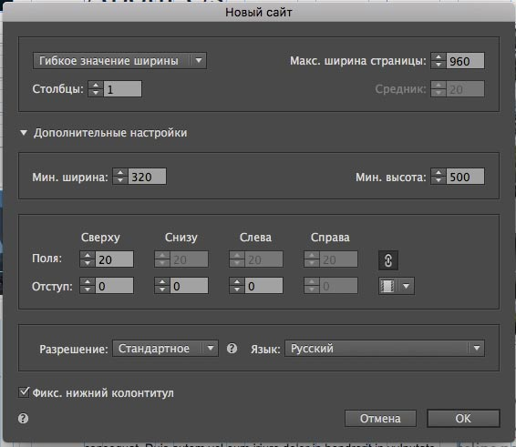
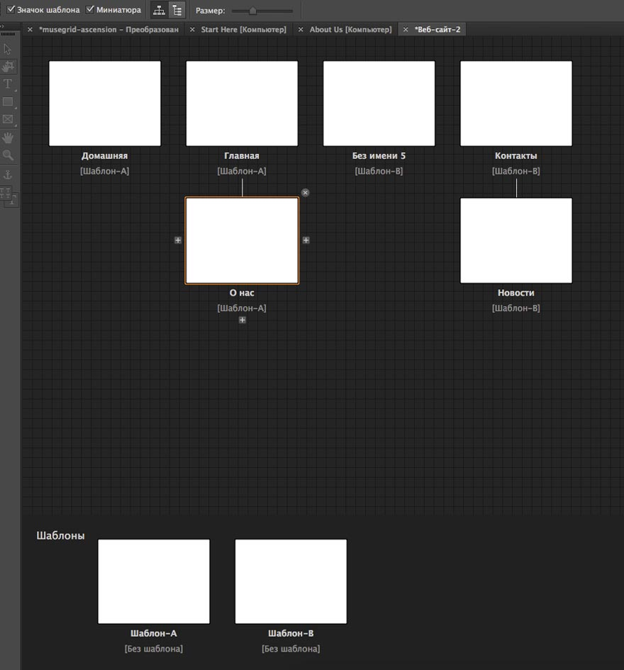

Программное обеспечение для разработки сайтов


Adobe Muse
Обзор конструктора сайта Adobe Muse
Adobe Muse – это программа из пакета Adobe Creative Cloud, предназначенная для разработки веб-сайтов. Считается профессиональным инструментом, позволяющим создавать разнообразные и красивые сайты. Результат во многом зависит от уровня навыка пользователя.
Adobe Muse – это программа из пакета Adobe Creative Cloud, предназначенная для разработки веб-сайтов. Считается профессиональным инструментом, позволяющим создавать разнообразные и красивые сайты. Результат во многом зависит от уровня навыка пользователя.
Оглавление
Adobe Muse – компьютерная программа для создания сайтов на HTML-5 от самого известного в мире разработчика качественного ПО.
Если вы много работали в Photoshop, то, скорее всего, Muse вам очень понравится. Освоитесь быстро, ведь интерфейс у программ
выдержан в одном стиле и использует одинаковые структурные принципы. Знание кода не требуется. По сути,
её можно сравнить с очень продвинутым WYSIWYG-редактором в сайтбилдерах вроде Wix.
Обзор Muse равноценен полному обзору Фотошопа с его сотнями плагинов, палитр, кистей и прочим. Всё равно, что написать, а потом дать кому-нибудь прочесть «Войну и мир» из ниши IT. Мы постараемся в уже привычном для вас формате подать информацию о возможностях этого ПО с необходимым количеством значимых деталей. Поехали!
Обзор Muse равноценен полному обзору Фотошопа с его сотнями плагинов, палитр, кистей и прочим. Всё равно, что написать, а потом дать кому-нибудь прочесть «Войну и мир» из ниши IT. Мы постараемся в уже привычном для вас формате подать информацию о возможностях этого ПО с необходимым количеством значимых деталей. Поехали!
1
Дизайны и работа с шаблонами
Изначально Muse предлагает создание чистого проекта. То есть вы открываете пустой лист и на начинаете выстраивать
структуру сайта. Это, конечно, весело, но под это ПО существует огромное количество разнообразных шаблонов
под любые задачи. Кроме готовых шаблонов можно скачать различные структуры сайтов, размеченные сеткой для удобства.
Или просто сетку, с ней гораздо удобнее работать. Кстати, её можно вручную настроить в свойствах открытой
страницы – количество столбцов, средник и прочее. Рекомендуется создавать 12 столбцов – оптимальное количество
для большинства задач. Так вы сможете выстраивать свой контент ровно в рабочей области.
Muse призывает творить, но в Сети полно готовых дизайнов в виде сохранённых проектов с расширением .muse.
Их можно накачать сколько угодно бесплатно. Проблема одна: они обычно запакованы в архивы, а по названиям папок
вы вряд ли сможете определить, какой шаблон они за собою скрывают. Придётся скачивать оптом, потом открывать в
программе и смотреть, что вы взяли. Хотя можно и по одному качать с сайтов, где есть скриншоты, описание и т. д.
Кому как больше нравится. На официальной странице Adobe Muse также можно купить шаблоны.
Muse позволяет создавать адаптивные сайты. То есть вам при создании проекта предложат выбрать для него фиксированную или гибкую ширину. Конечно, выбирать стоит второй вариант. Иначе придётся мобильные версии макета сайта делать отдельно. Можно выбрать минимальную и максимальную ширину страницы, поля и отступы.
Muse позволяет создавать адаптивные сайты. То есть вам при создании проекта предложат выбрать для него фиксированную или гибкую ширину. Конечно, выбирать стоит второй вариант. Иначе придётся мобильные версии макета сайта делать отдельно. Можно выбрать минимальную и максимальную ширину страницы, поля и отступы.

Слово «шаблон» в Muse имеет не совсем привычное
для большинства пользователей конструкторов
значение. Шаблон здесь необходим только для создания
многостраничных сайтов (но активен всегда,
просто можно оставить этот макет пустым).
Эта та часть макета, которая будет повторяться
на всех страницах (меню, пустой блок контента, хедер,
футер, к примеру). Всё остальное здесь называется
«страницей». При формировании последних, как вы
понимаете,отпадает необходимость в повторении элементов,
которые уже есть в шаблоне. Хотя вы можете создавать
многостраничный сайт именно из страниц, если вам
так больше понравится. Также вы можете создать несколько
шаблонов, выбирая на каких страницах будет отображаться
их содержимое. А ещё можно дублировать шаблоны
и страницы, переназначать привязку страниц к шаблонам,
добавлять, удалять и т. д. Полная свобода компоновки
структуры сайта.
для большинства пользователей конструкторов
значение. Шаблон здесь необходим только для создания
многостраничных сайтов (но активен всегда,
просто можно оставить этот макет пустым).
Эта та часть макета, которая будет повторяться
на всех страницах (меню, пустой блок контента, хедер,
футер, к примеру). Всё остальное здесь называется
«страницей». При формировании последних, как вы
понимаете,отпадает необходимость в повторении элементов,
которые уже есть в шаблоне. Хотя вы можете создавать
многостраничный сайт именно из страниц, если вам
так больше понравится. Также вы можете создать несколько
шаблонов, выбирая на каких страницах будет отображаться
их содержимое. А ещё можно дублировать шаблоны
и страницы, переназначать привязку страниц к шаблонам,
добавлять, удалять и т. д. Полная свобода компоновки
структуры сайта.
Стоит отметить, что элементы, представленные на шаблоне,
нельзя редактировать с отдельных страниц.Они там будут
отображены, но неактивны для каких-либо действий.
В целом, это удобно – вы будетецентрализованно менять
общие области на страницах, ошибок здесь бытьпросто не может.
Что касается кастомизации элементов, то её возможности
в Адоб Мьюз почти безграничны. Анимации, эффекты, тени,
слои, заливка, фигуры, непрозрачность, обводки, любые цвета,
фоны и прочее. Почти тот же Фотошоп,но адаптированный под
задачу создания сайтов.Все элементы (текст, картинка,
слайд-шоу, кнопка и т. д.)здесь помещены в отдельные фреймы.
Вы можете выделить любойиз них и начать редактирование
заключённого в него контента.Можно подключить свои шрифты и
настроить их как угодно(точь-в-точь как в пресловутом Photoshop).
Предпросмотр, конечно, есть. Как для отдельных страниц,
так и для всего сайта. Как в родном окне программы,
так и из браузера. В целом, Muse произвёл впечатление
приложения с ну очень гибкими возможностями настройки
дизайна. Да, пользоваться ими не всем будет просто и удобно,
но те, кто ранее работали в Photoshop освоятся быстро.
Система понравится дизайнерам и бывалым разработчикам.
Элементы, шаблоны и страницы можно компоновать как угодно,
настроек масса. Простор для творчества огромный, но нужно
обладать вкусом и навыками для эффективного использования.
Новичкам же, к сожалению, будет тяжело.
нельзя редактировать с отдельных страниц.Они там будут
отображены, но неактивны для каких-либо действий.
В целом, это удобно – вы будетецентрализованно менять
общие области на страницах, ошибок здесь бытьпросто не может.
Что касается кастомизации элементов, то её возможности
в Адоб Мьюз почти безграничны. Анимации, эффекты, тени,
слои, заливка, фигуры, непрозрачность, обводки, любые цвета,
фоны и прочее. Почти тот же Фотошоп,но адаптированный под
задачу создания сайтов.Все элементы (текст, картинка,
слайд-шоу, кнопка и т. д.)здесь помещены в отдельные фреймы.
Вы можете выделить любойиз них и начать редактирование
заключённого в него контента.Можно подключить свои шрифты и
настроить их как угодно(точь-в-точь как в пресловутом Photoshop).
Предпросмотр, конечно, есть. Как для отдельных страниц,
так и для всего сайта. Как в родном окне программы,
так и из браузера. В целом, Muse произвёл впечатление
приложения с ну очень гибкими возможностями настройки
дизайна. Да, пользоваться ими не всем будет просто и удобно,
но те, кто ранее работали в Photoshop освоятся быстро.
Система понравится дизайнерам и бывалым разработчикам.
Элементы, шаблоны и страницы можно компоновать как угодно,
настроек масса. Простор для творчества огромный, но нужно
обладать вкусом и навыками для эффективного использования.
Новичкам же, к сожалению, будет тяжело.

2
Функциональные возможности
Adobe Muse предназначена для создания сайтов-визиток и посадочных страниц (лендингов).
Блоги здесь реализовать не получится, поскольку динамического обновления контента, ровно
как и онлайн-панели управления здесь нет. На сайте будет отображаться только статический контент.
Все файлы сайта можно экспортировать
на хостинг по FTP либо же в локальную папку на своем компьютере. Следовательно, при желании,
вы можете получить доступ к коду сайта, но в этом острой необходимости нет.
Создание магазина на Muse – затея реализуемая, но не из лучших. Только небольшой и с ограниченной функциональностью, да и то при помощи сторонних виджетов. Вы можете устанавливать плагины, наборы виджетов и прочее. Но всё это значительно усложнит и без того непростой интерфейс. По-хорошему, программа подходит лишь для создания визиток да лэндингов, особенно последних. С этим проблем не возникнет. Всё остальное – под большим вопросом.
Интерфейс у Muse довольно сложный, но очень продуманный, логичный. Если вы хотите научиться им пользоваться на полную катушку, рекомендуем ознакомиться с курсами, разнообразными FAQ и прочего рода материалами по системе. Так у вас дела пойдут значительно быстрее. Общие принципы работы в Muse значительно отличаются от тех, что существуют в нише онлайн конструкторов сайтов. Да и другого ПО для создания сайтов вроде Mobirise или Website X5. Это ПО на порядок сложнее, но и функциональнее. Минус один – у Muse малый охват типов сайтов, которые возможно создать.
Создание магазина на Muse – затея реализуемая, но не из лучших. Только небольшой и с ограниченной функциональностью, да и то при помощи сторонних виджетов. Вы можете устанавливать плагины, наборы виджетов и прочее. Но всё это значительно усложнит и без того непростой интерфейс. По-хорошему, программа подходит лишь для создания визиток да лэндингов, особенно последних. С этим проблем не возникнет. Всё остальное – под большим вопросом.
Интерфейс у Muse довольно сложный, но очень продуманный, логичный. Если вы хотите научиться им пользоваться на полную катушку, рекомендуем ознакомиться с курсами, разнообразными FAQ и прочего рода материалами по системе. Так у вас дела пойдут значительно быстрее. Общие принципы работы в Muse значительно отличаются от тех, что существуют в нише онлайн конструкторов сайтов. Да и другого ПО для создания сайтов вроде Mobirise или Website X5. Это ПО на порядок сложнее, но и функциональнее. Минус один – у Muse малый охват типов сайтов, которые возможно создать.
Окно редактора содержит опции общего характера (файл, редактировать, страница, объект,
просмотр, окно, справка), левый сайдбар в стиле Фотошопа (инструменты – выделение, рамка,
прямоугольник, фрейм, рука и масштаб) и правый cайдбар, набор инструментов в котором
можно настроить под себя в меню «Окно».
Именно здесь находятся элементы и панели для их настройки. Очень важным компонентом
является библиотека мини-приложений. Она является аналогом виджетов в конструкторах
сайтов, по сути. В стоковом варианте (без установки плагинов и виджетов) вам доступны:
-кнопки – добавьте на страницу кнопку, настройте её внешний вид и привяжите ссылку;
-композиции – различные стили и форматы для контента: лайтбокс, подсказка, презентация, пустая, специальные новости;
-меню – добавление вертикального или горизонтального меню на страницу, подменю есть;
-панели – табы со вкладками или раздвижные для красивой подачи информации;
-слайд-шоу – различные стили оформления слайд-шоу (полноэкранный, лайтбокс, миниатюры и т. д.);
-социальная сеть – помимо кнопок соцсетей отсюда можно добавить ролики с популярных видеохостингов и кнопку «PayPal» для приёма онлайн-оплат;
-формы – простая и подробная контактные формы.
Также вы можете из этой панели настроить эффекты при прокрутке, работать с текстом, слоями и прочее. На самом деле, Muse не такая уж и сложная система. Если вы знакомы с другими продуктами от Adobe, то разобраться не составит труда.
Как вы понимаете, для публикации сайта вам потребуется хостинг и домен. Можете приобрести их у любого провайдера, потом залить туда сайт, и всё будет работать. Проблема одна – частые обновления вашему детищу не светят. Muse лучше всего использовать для создания одностраничников. Работы мало, изменения часто вносить не нужно, размах для компоновки дизайна широчайший.
Немаловажным моментом является интеграция Музы с другими продуктами от Адобе. Вы получаете целую экосистему. Например, можно перетаскивать композиции из Animate прямо на страницы в виде рисунков из библиотеки CC Library. Также вы можете импортировать графику из Illustrator с жесткого диска или облака без необходимости экспорта в формат SVG. А ещё у вас будет доступ к магазину дизайнерских шрифтов Typekit Marketplace. Все шрифты будут доступны на любых устройствах под вашим аккаунтом Creative Cloud. Фирменное облако позволяет хранить, синхронизировать и по необходимости восстанавливать все ресурсы, которые были созданы в приложениях Adobe.
Вообще, разработчик каждый год обновляет свой пакет программ. Появляются новые функции, заготовки макетов под различные задачи, оптимизируется интерфейс, синхронизация становится более удобной и т. д. Покупая Muse, вы можете быть уверены – поддержка продлится ещё очень долго. Adobe серьёзно настроена на продвижение своих продуктов. С каждым годом Муза становится лучше. Так было и так будет.
Функционально данное ПО впечатлило, но поразить нас не смогло. Его использование требует большого количества навыков (особенно касательно дизайна), но обладает низкой ликвидностью. Если вы желаете начать зарабатывать на конвейерном создании посадочных страниц, тогда Muse сможет привлечь внимание. Ради же работы над одним-единственным сайтом тратить усилия на освоение категорически не рекомендуем. Увы, несмотря на качество и гибкость, это весьма узкоспециализированный инструмент. В плане пригодности для массового использования противопоставить популярным конструкторам ему нечего. Онлайн-сервисы на порядок удобнее, пусть даже многие из них и уступают по возможностям настройки дизайна.
-кнопки – добавьте на страницу кнопку, настройте её внешний вид и привяжите ссылку;
-композиции – различные стили и форматы для контента: лайтбокс, подсказка, презентация, пустая, специальные новости;
-меню – добавление вертикального или горизонтального меню на страницу, подменю есть;
-панели – табы со вкладками или раздвижные для красивой подачи информации;
-слайд-шоу – различные стили оформления слайд-шоу (полноэкранный, лайтбокс, миниатюры и т. д.);
-социальная сеть – помимо кнопок соцсетей отсюда можно добавить ролики с популярных видеохостингов и кнопку «PayPal» для приёма онлайн-оплат;
-формы – простая и подробная контактные формы.
Также вы можете из этой панели настроить эффекты при прокрутке, работать с текстом, слоями и прочее. На самом деле, Muse не такая уж и сложная система. Если вы знакомы с другими продуктами от Adobe, то разобраться не составит труда.
Как вы понимаете, для публикации сайта вам потребуется хостинг и домен. Можете приобрести их у любого провайдера, потом залить туда сайт, и всё будет работать. Проблема одна – частые обновления вашему детищу не светят. Muse лучше всего использовать для создания одностраничников. Работы мало, изменения часто вносить не нужно, размах для компоновки дизайна широчайший.
Немаловажным моментом является интеграция Музы с другими продуктами от Адобе. Вы получаете целую экосистему. Например, можно перетаскивать композиции из Animate прямо на страницы в виде рисунков из библиотеки CC Library. Также вы можете импортировать графику из Illustrator с жесткого диска или облака без необходимости экспорта в формат SVG. А ещё у вас будет доступ к магазину дизайнерских шрифтов Typekit Marketplace. Все шрифты будут доступны на любых устройствах под вашим аккаунтом Creative Cloud. Фирменное облако позволяет хранить, синхронизировать и по необходимости восстанавливать все ресурсы, которые были созданы в приложениях Adobe.
Вообще, разработчик каждый год обновляет свой пакет программ. Появляются новые функции, заготовки макетов под различные задачи, оптимизируется интерфейс, синхронизация становится более удобной и т. д. Покупая Muse, вы можете быть уверены – поддержка продлится ещё очень долго. Adobe серьёзно настроена на продвижение своих продуктов. С каждым годом Муза становится лучше. Так было и так будет.
Функционально данное ПО впечатлило, но поразить нас не смогло. Его использование требует большого количества навыков (особенно касательно дизайна), но обладает низкой ликвидностью. Если вы желаете начать зарабатывать на конвейерном создании посадочных страниц, тогда Muse сможет привлечь внимание. Ради же работы над одним-единственным сайтом тратить усилия на освоение категорически не рекомендуем. Увы, несмотря на качество и гибкость, это весьма узкоспециализированный инструмент. В плане пригодности для массового использования противопоставить популярным конструкторам ему нечего. Онлайн-сервисы на порядок удобнее, пусть даже многие из них и уступают по возможностям настройки дизайна.
3
Ценовая политика Mobirise (цены на тарифы)
Как и все продукты пакета Creative Cloud, Muse распространяется на основе платной подписки.
Крайне неудобная форма тарификации для десктопного ПО. Пробную версию можно скачать на официальном сайте Adobe.
Стоимость – 454 руб/мес или почти 5500 рублей за год. Есть бесплатный пробный период 7 дней.
Учитывая, что вы можете создавать неограниченное количество сайтов, цена вполне адекватная.
К этой стоимости также нужно прибавить расходы на хостинги и домены. Так вы получите
полную стоимость использования Muse.
4
Плюсы и минусы
Muse – противоречивый продукт. Его можно как хвалить взахлёб, что будет вполне справедливо,
так и ругать за многое. К достоинствам мы отнесли:
-мощный визуальный редактор;
-продвинутые возможности по созданию структуры сайта;
-возможность подключения веб-шрифтов;
-большое количество любых шаблонов в свободном доступе Сети;
-наличие всяческих эффектов, анимаций, при помощи которых отдельным элементам легко можно придать красивый внешний вид;
-возможность создания адаптивных сайтов;
-возможность приёма онлайн-оплат с сайта;
-сложный, но всё же отлично структурированный интерфейс;
-доступ к развитой экосистеме и техподдержке от Adobe.
Недостатков меньше, но все они значительные:
-узкая специализация, большие сайты на Muse смогут делать только профи;
-для реализации некоторых элементарных функций потребуется подключение сторонних виджетов и плагинов;
-спартанский набор SEO-настроек;
-ввиду типа системы необходимо покупать хостинг, домен и мириться с отсутствием онлайновой панели управления;
-в Muse неудобно обновлять созданные сайты.
Пожалуй, этого хватит. Как видите, Muse – специфическое ПО. Добротно выполненное, но от врождённых минусов такого рода платформ разработчикам пока уйти не удалось.
Альтернатив море. Если речь идёт о создании визиток, то любой конструктор с визуальным редактором окажется удобнее для большинства. О магазинах молчим. Блоги, понятно, тоже проходят мимо – там необходимо динамическое обновление контента. Остаются посадочные страницы. В этом плане Muse напоминает LPGenerator, но последний, помимо мощного визуального редактора схожего класса, может предложить удобство администрирования, продвижения и анализа статистики. У Muse этого нет. Проще взять uKit или Wix и быстренько создать лэндинг, чем мучиться с данным ПО, не имея опыта.
Да, Muse имеет огромную армию поклонников. Часть из них – те, кто продают курсы по этой системе. Для них это хлеб. Другая часть – те, кто рисует шаблоны и пишет виджеты. Оставшиеся – те, кто делает лэндинги по 20 штук в месяц не первый год. А что же обычные пользователи? Они не заморачиваются и используют конструкторы либо CMS. Это проще, в конечном счёте. Да и в ряде случаев дешевле, поскольку вряд ли многим необходимо создание большого количества сайтов.
-мощный визуальный редактор;
-продвинутые возможности по созданию структуры сайта;
-возможность подключения веб-шрифтов;
-большое количество любых шаблонов в свободном доступе Сети;
-наличие всяческих эффектов, анимаций, при помощи которых отдельным элементам легко можно придать красивый внешний вид;
-возможность создания адаптивных сайтов;
-возможность приёма онлайн-оплат с сайта;
-сложный, но всё же отлично структурированный интерфейс;
-доступ к развитой экосистеме и техподдержке от Adobe.
Недостатков меньше, но все они значительные:
-узкая специализация, большие сайты на Muse смогут делать только профи;
-для реализации некоторых элементарных функций потребуется подключение сторонних виджетов и плагинов;
-спартанский набор SEO-настроек;
-ввиду типа системы необходимо покупать хостинг, домен и мириться с отсутствием онлайновой панели управления;
-в Muse неудобно обновлять созданные сайты.
Пожалуй, этого хватит. Как видите, Muse – специфическое ПО. Добротно выполненное, но от врождённых минусов такого рода платформ разработчикам пока уйти не удалось.
Альтернатив море. Если речь идёт о создании визиток, то любой конструктор с визуальным редактором окажется удобнее для большинства. О магазинах молчим. Блоги, понятно, тоже проходят мимо – там необходимо динамическое обновление контента. Остаются посадочные страницы. В этом плане Muse напоминает LPGenerator, но последний, помимо мощного визуального редактора схожего класса, может предложить удобство администрирования, продвижения и анализа статистики. У Muse этого нет. Проще взять uKit или Wix и быстренько создать лэндинг, чем мучиться с данным ПО, не имея опыта.
Да, Muse имеет огромную армию поклонников. Часть из них – те, кто продают курсы по этой системе. Для них это хлеб. Другая часть – те, кто рисует шаблоны и пишет виджеты. Оставшиеся – те, кто делает лэндинги по 20 штук в месяц не первый год. А что же обычные пользователи? Они не заморачиваются и используют конструкторы либо CMS. Это проще, в конечном счёте. Да и в ряде случаев дешевле, поскольку вряд ли многим необходимо создание большого количества сайтов.
5
Выводы и рекомендации
Muse – однозначно, одна из лучших программ для создания сайтов. И весьма сложная. Дело даже не в
интерфейсе – его можно освоить за пару-тройку дней, посмотрев уроки на Youtube. Или самостоятельно, если вы уже работали
с другими продуктами от Adobe. Проблема в том, что вы получаете чистый лист, который со вкусом
оформить средствами ПО с нуля смогут далеко не все. Да, средненький сайт на Музе сделает кто-угодно.
Особенно, имея опыт работы с Photoshop.
Если же вы хотите получать результат вроде того, что мы показали в примерах сайтов, придётся работать долго и упорно. Плюс в том, что материалов по Muse в Сети огромное количество. При желании, вы сможете найти и скачать много виджетов/шаблонов и посмотреть какие-нибудь продвинутые курсы, которые существенно облегчат жизнь. За часть из всего этого всё же придётся заплатить.
Пожалуй, лёгкий старт светит только тем, кто уже плотно работал в экосистеме программных продуктов от Adobe. И дизайнерам. Остальным придётся тяжко на первых порах. Несмотря на противоречия, мы рекомендуем ознакомиться с Muse, скачав бесплатную пробную версию с официального сайта. ПО заслуживает внимания. Возможно, Муза – именно то, чего вы искали. Если же нет, – конструкторы сайтов всегда под рукой. На любой вкус.
Если же вы хотите получать результат вроде того, что мы показали в примерах сайтов, придётся работать долго и упорно. Плюс в том, что материалов по Muse в Сети огромное количество. При желании, вы сможете найти и скачать много виджетов/шаблонов и посмотреть какие-нибудь продвинутые курсы, которые существенно облегчат жизнь. За часть из всего этого всё же придётся заплатить.
Пожалуй, лёгкий старт светит только тем, кто уже плотно работал в экосистеме программных продуктов от Adobe. И дизайнерам. Остальным придётся тяжко на первых порах. Несмотря на противоречия, мы рекомендуем ознакомиться с Muse, скачав бесплатную пробную версию с официального сайта. ПО заслуживает внимания. Возможно, Муза – именно то, чего вы искали. Если же нет, – конструкторы сайтов всегда под рукой. На любой вкус.
Группа МИБ-112
Рогожина Анна
Рогожина Анна